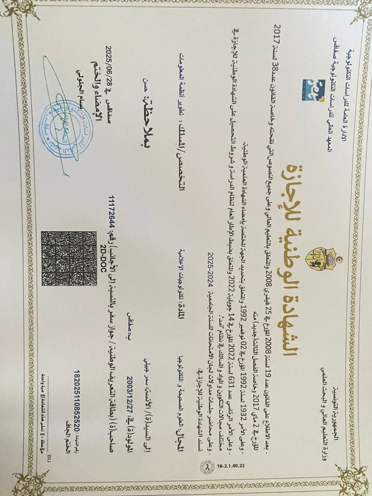
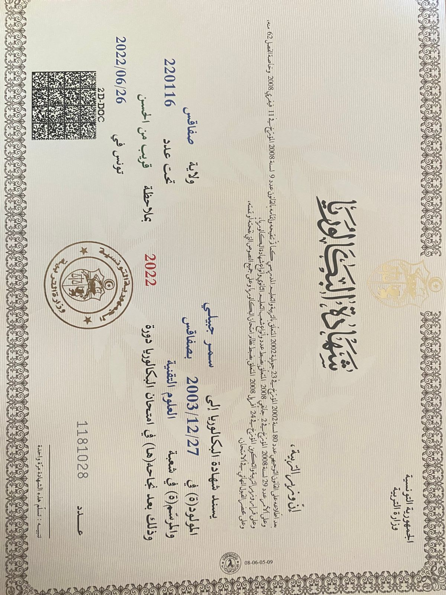

Parcours Académique
Cycle Ingénieur en Génie Informatique
2025 à 2028
Institut International de Technologie (IIT)
Formation d'ingénieur en génie informatique avec spécialisation en développement de systèmes informatiques. Cette formation me permet d'acquérir des compétences avancées en programmation, architecture logicielle et gestion de projets informatiques.
Licence en Technologies Informatiques
2022 – 2025
Institut Supérieur des Études Technologiques de Sfax
Spécialisation : Développement des systèmes informatiques. Cette licence m'a permis de maîtriser les fondamentaux de la programmation, des bases de données, ainsi que du développement web et mobile.
Baccalauréat Sciences Techniques
2021 - 2022
Lycée Ibn Rachik, Sakiet Ezzit, Sfax
Obtention du baccalauréat section Sciences Techniques, qui m'a donné de solides bases en mathématiques, physique et sciences de l'ingénieur.
